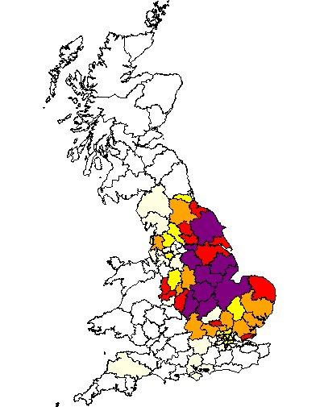

Ward has been a common name in Leicestershire for 200 years. Our earliest family member is John Ward who married Sarah James in Shepshed, Leicestershire in October 1770. The family were framework knitters, part of the great hosiery industry of Leicestershire.
The Ward family connect to the Noble tree through Louisa Lloyd, daughter of John Lloyd and Louisa Ward.
Return to Home